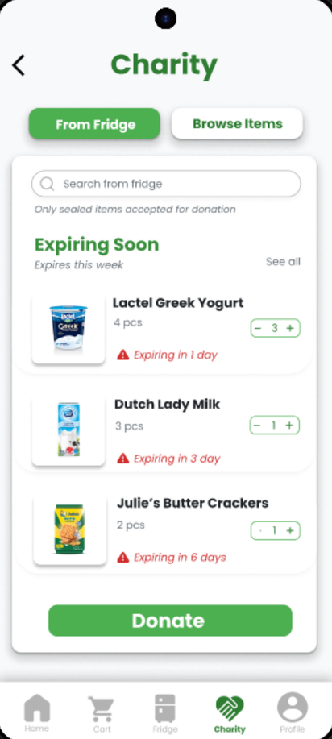

Know what's about to expire
Connect your smart fridge by scanning its QR code. Every item is tracked by name, category and expiry date, and anything new can be added by scanning its barcode or typing it in. Items close to their date are flagged, so nothing gets forgotten.
- Error preventionSet fields for name, category, expiry date and quantity cut down on mistakes.
- Recognition over recallScanning, product photos and category filters mean people recognise items instead of remembering them.